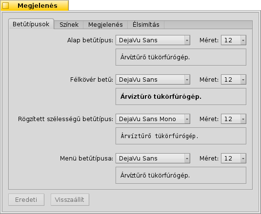
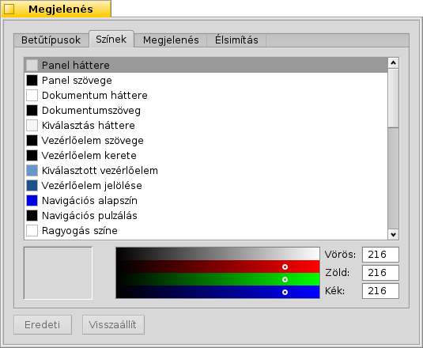
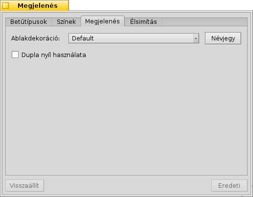
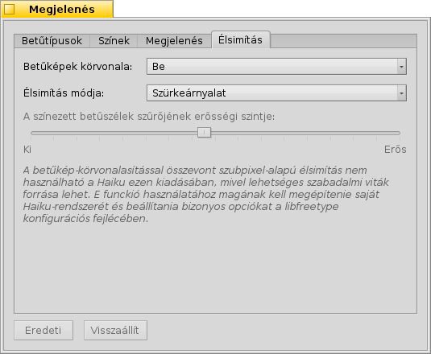
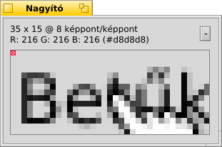
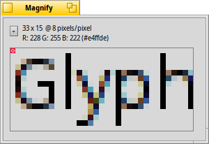

Magyar
Magyar Català
Català Deutsch
Deutsch English
English Español
Español Français
Français Italiano
Italiano Polski
Polski Português
Português Português (Brazil)
Português (Brazil) Română
Română Slovenčina
Slovenčina Suomi
Suomi Svenska
Svenska 中文 ［中文］
中文 ［中文］ Русский
Русский Українська
Українська 日本語
日本語 Megjelenés (Appearance)
Megjelenés (Appearance)
| Asztalsáv: | ||
| Útvonal: | /boot/system/preferences/Appearance | |
| Bellítások: | ~/config/settings/system/app_server/appearance ~/config/settings/system/app_server/fonts |
A Haiku megjelenési beállításait szabhatjuk személyre ezen a felületen.
 Betűtípusok
Betűtípusok

A Haiku 3 szabványos betűtípust támogat. Beállítható az alap, a félkövér és a rögzített szélességű betűtípusok és a méreteik, amit a rendszer használ. Ezeken kívül pedig a menüben használt betűtípus is megadható.
Új betűtípusok telepítése
Azok a betűtípusok, melyek nem egy .hpkg részeként érkeznek, azok a betűtípusnak megfelelő almappába (a non-packed mappán belül) másolással telepíthetőek (psfonts vagy ttfonts). További információk a Fájlrendszer szerkezete fejezetben. TrueType betűk esetében:
| /boot/system/non-packaged/data/fonts/ttfonts/ | minden felhasználó számára elérhető betűtípusok számára. | |
| /boot/home/config/non-packaged/data/fonts/ttfonts/ | csak a saját betűtípusok. |
Színek

A fülön a felület különféle részeinek a színei módosíthatóak. A színek megadhatóak úgy is, ha egy palettából (például a WonderBrush-ból vagy az Icon-O-Matic-ból) dobjuk ide a megfelelő színt.
Megjelenés

A dekorációk az ablak és a vezérlőelemek megjelenésének megadásra szolgálnak. Jelenleg a Haiku csak egy dekorációval rendelkezik. Több dekoráció esetében a listából tudjuk kiválasztani a szükségeset.
A dupla nyíl pedig azt jelenti, hogy a görgetősáv mind a két végén dupla nyíl található. A dupla nyíl mink a két irányú görgető-nyilat tartalmazza.
Az eredeti Haiku dekoráció lehetőséget nyújt a görgetősáv nyilainak stílusának módosítására. Lehetnek egyszeres nyilak (helytakarékosság) illetve lehetnek dupla nyilak (kevesebb egérmozgatás) — hagyományos BeOS terminológia.
Élsimítás

Az fülön a megjelenítési módot szabályozhatjuk.
Betűképek körvonala
A bekapcsolásakor a karakterek igazítása két képpont közt történik függőlegesen és vízszintesen a karakter vonalainak éléhez képes. Ez tökéletes kontrasztot eredményez épp úgy, mint a fekete a fehéren. A szöveg így élesebben jelenik meg. A betűknek van egy külön beállítása, ami különösen az alacsony felbontású eszközök esetében lehet segítség. A kisebb méretű betűk a betűképek körvonalának bekapcsolásakor elég rosszul néznek ki, de ezt a beállítást kihasználhatjuk a szöveg szerkesztőknél vagy a Terminálnál.
Lássuk most a különbséget a körvonalak használatára a nagyított képen:
|  Körvonal: ki |  Körvonal: be |
Azt azért meg kell jegyezni, hogy a Nagyító ablakok ezen az oldalon két különféle beállításokkal lettek létrehozva. Leginkább akkor látjuk a különbséget, amikor a fenti két képen megnézzük akár a sárga fülön a címet, akár az alatta lévő szöveget.
Élsimítás típusa
Egy másik technika a megjelenítés javítására az Élsimítás, amit mind a vektoros grafikák mind pedig a szöveg esetében használhatunk. Ez elmossa a vonalakat úgy, hogy néhány képpont színét módosítja. Ezt kétféleképpen teheti meg:
A az élek intenzitását módosítja.
Az ettől jobb munkát végez, különösen (nagy felbontású) LCD monitorok esetében. Az intenzitás helyett a képpont színét módosítja az élek mentén mozogva, mert az LCD monitorok minden képpontot a piros, zöld és kék színekből állítanak össze.
Szintén két példa a különböző megjelenésre:
Szürkeányalat, körvonal: ki | LCD-szubpixel, körvonal: ki |
A szubpixeles élsimítás színes fényt ad az objektumoknak, amit nem mindenki tolerál. Ezért a Haiku mind a két élsimítási módot tudja egyszerre használni, mindenki megtalálhatja a megfelelő kombinációt a csuszka mozgatásával.
Ha a körvonalakat az LCD szubpixelel együtt használod a forráskód módosításával és újrafordításával, akkor ezt kapod eredményül a szürkeárnyalatossal összehasonlítva:
Szürkeárnyalat, körvonal: be |  LCD-szubpixel, körvonal: be |
A panel alján két gombot találhatunk:
| Az eredeti beállítások megadása. | ||
| A panel megnyitásakori állapot vsszaállítása. |